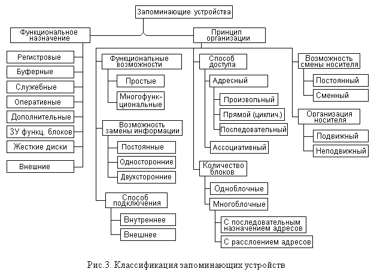
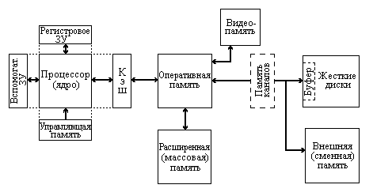
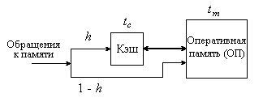

1.2. Классификация запоминающих устройств
1.2.1. Классификация ЗУ по функциональному назначениюВ настоящее время существует большое количество различных типов ЗУ, используемых в ЭВМ и системах. Эти устройства различаются рядом признаков: принципом действия, логической организацией, конструктивной и технологической реализацией, функциональным назначением и т.д. Большое количество существующих типов ЗУ обусловливает различия в структурной и логической организации (систем) памяти ЭВМ. Требуемые характеристики памяти достигаются не только за счет применения ЗУ с соответствующими характеристиками, но в значительной степени за счет особенностей ее структуры и алгоритмов функционирования.
Память ЭВМ почти всегда является "узким местом", ограничивающим производительность компьютера. Поэтому в ее организации используется ряд приемов, улучшающих временные характеристики памяти и, следовательно, повышающих производительность ЭВМ в целом.
Классификация запоминающих устройств и систем памяти позволяет выделить общие и характерные особенности их организации, систематизировать базовые принципы и методы, положенные в основу их реализации и использования.
Один из возможных вариантов классификации ЗУ представлен на рис.3. В нем устройства памяти подразделяются по двум основным критериям: по функциональному назначению (роли или месту в иерархии памяти) и принципу организации.

1.2.1. Классификация ЗУ по функциональному назначению
При разделении ЗУ по функциональному назначению иногда рассматривают два класса: внутренние и внешние ЗУ ЭВМ. Такое деление первоначально основывалось на различном конструктивном расположении их в ЭВМ. В настоящее время, например, накопители на жестких магнитных дисках, традиционно относимые к внешним ЗУ, конструктивно располагаются непосредственно в основном блоке компьютера. Поэтому разделение на внешние и внутренние ЗУ имеет в ряде случаев относительный, условный характер. Обычно к внутренним ЗУ относят устройства, непосредственно доступные процессору, а к внешним – такие, обмен информацией которых с процессором происходит через внутренние ЗУ.
Общий вид иерархии памяти ЭВМ представлен на рис.4. На нем показаны различные типы ЗУ, причем поскольку рисунок обобщенный, то не все из представленных на нем ЗУ обязательно входят в состав ЭВМ, а характер связей между устройствами может отличаться от показанного на рисунке.

Рис. 4. Возможный состав системы памяти ЭВМ
1. Верхнее место в иерархии памяти занимают регистровые ЗУ, которые входят в состав процессора и часто рассматриваются не как самостоятельный блок ЗУ, а просто как набор регистров процессора. Такие ЗУ в большинстве случаев реализованы на том же кристалле, что и процессор, и предназначены для хранения небольшого количества информации (до нескольких десятков слов, а в RISC-архитектурах – до сотни), которая обрабатывается в текущий момент времени или часто используется процессором. Это позволяет сократить время выполнения программы за счет использования команд типа регистр-регистр и уменьшить частоту обменов информацией с более медленными ЗУ ЭВМ. Обращение к этим ЗУ производится непосредственно по командам процессора.
2. Следующую позицию в иерархии занимают буферные ЗУ. Их назначение состоит в сокращении времени передачи информации между процессором и более медленными уровнями памяти компьютера. Буферная память может устанавливаться на различных уровнях, но здесь речь идет именно об указанном ее местоположении. Ранее такие буферные ЗУ в отечественной литературе называли сверхоперативными, сейчас это название практически полностью вытеснил термин "кэш-память" или просто кэш.
Принцип использования буферной памяти во всех случаях сводится к одному и тому же. Буфер представляет собой более быстрое (а значит, и более дорогое), но менее емкое ЗУ, чем то, для ускорения работы которого он предназначен. При этом в буфере размещается только та часть информации из более медленного ЗУ, которая используется в настоящий момент. Если доля h обращений к памяти со стороны процессора, удовлетворяемых непосредственно буфером (кэшем) высока (0,9 и более), то среднее время для всех обращений оказывается близким ко времени обращения к кэшу, а не к более медленному ЗУ.Пусть двухуровневая память состоит из кэш и оперативной памяти,
как показано на рис.5. И пусть, например, время обращения к кэшу tc
= 1 нс (10-9 с), время tm обращения к более медленной памяти в десять раз больше
– tm = 10 нс, а доля обращений, удовлетворяемых кэшем, h =
0,95.
Тогда среднее время обращения к такой двухуровневой памяти Tср
составит Tср = 1 * 0.95 + 10 * (1 – 0.95 ) = 1.45 нс, т.е. всего на
45% больше времени обращения к кэшу. Значение h зависит от размера
кэша и характера выполняемых программ и иногда называется отношением успехов
или попаданий (hit ratio).

Рис.5. К расчету среднего времени обращения
(tc – время обращения к кэш-памяти,
tm – время обращения к ОП,
h – доля обращения, обслуживаемых кэш-памятью,
1 – h – доля обращений, обслуживаемых ОП)
Размеры кэш-памяти существенно изменяются с развитием технологий. Так, если в первых ЭВМ, где была установлена кэш-память, во второй половине 1960-х годов (большие ЭВМ семейства IBM-360) ее емкость составляла всего от 8 до 16 КБайт, то уже во второй половине 1990-х годов емкость кэша рядовых персональных ЭВМ составляла 512 КБайт. Причем сама кэш-память может состоять из двух (а в серверных системах – даже трех) уровней: первого (L1) и второго (L2), также отличающихся своей емкостью и временем обращения.
Конструктивно кэш уровня L1 входит в состав процессора (поэтому его иногда называют внутренним). Кэш уровня L2 либо также входит в микросхему процессора, либо может быть реализован в виде отдельной памяти. Как правило, на параметры быстродействия процессора большее влияние оказывают характеристики кэш-памяти первого уровня.
Время обращения к кэш-памяти, которая обычно работает на частоте процессора, составляет от десятых долей до единиц наносекунд, т.е. не превышает длительности одного цикла процессора.
Обмен информацией между кэш-памятью и более медленными ЗУ для улучшения временных характеристик выполняется блоками, а не байтами или словами. Управляют этим обменом аппаратные средства процессора и операционная система, и вмешательство прикладной программы не требуется. Причем непосредственно командам процессора кэш-память недоступна, т.е. программа не может явно указать чтение или запись в кэш-памяти, которая является для нее, как иногда говорят, “прозрачной” (прямой перевод используемого в англоязычной литературе слова transparent).
Некоторые особенности организации кэш-памяти рассмотрены в главе 4.
3. Еще одним (внутренним) уровнем памяти являются служебные ЗУ. Они могут иметь различное назначение.
Одним из примеров таких устройств являются ЗУ микропрограмм, которые иногда называют управляющей памятью. Другим – вспомогательные ЗУ, используемые для управления многоуровневой памятью.
В управляющей памяти, использующейся в ЭВМ с микропрограммным управлением, хранятся микропрограммы выполнения команд процессора, а также различных служебных операций.
Вспомогательные ЗУ для управления памятью (например, теговая память, используемая для управления кэш-памятью, буфер переадресации TLB – translation location buffer) представляют собой различные таблицы, используемые для быстрого поиска информации в разных ступенях памяти, отображения ее свойств, очередности перемещения между ступенями и пр.
Емкости и времена обращения к таким ЗУ зависят от их назначения. Обычно – это небольшие (до нескольких Кбайт), но быстродействующие ЗУ. Специфика назначения предполагает недоступность их командам процессора.
4. Следующим уровнем иерархии памяти является оперативная память. Оперативное ЗУ (ОЗУ) является основным запоминающим устройством ЭВМ, в котором хранятся выполняемые в настоящий момент процессором программы и обрабатываемые данные, резидентные программы, модули операционной системы и т.п. Название оперативной памяти также несколько изменялось во времени. В некоторых семействах ЭВМ ее называли основной памятью, основной оперативной памятью и пр. В англоязычной литературе также используется термин RAM (random access memory), означающий память с произвольным доступом.
Эта память используется в качестве основного запоминающего устройства ЭВМ для хранения программ, выполняемых или готовых к выполнению в текущий момент времени, и относящихся к ним данных. В оперативной памяти располагаются и компоненты операционной системы, необходимые для ее нормальной работы. Информация, находящаяся в ОЗУ, непосредственно доступна командам процессора, при условии соблюдения требований защиты.
Оперативная память реализуется на полупроводниках (интегральных схемах), стандартные объемы ее составляют (в начале 2000-х годов) сотни мегабайт – единицы гигабайт, а времена обращения – единицы÷десятки наносекунд.
5. Еще одним уровнем иерархии ЗУ может являться дополнительная память, которую иногда называли расширенной или массовой. Первоначально (1970-е годы) эта ступень использовалась для наращивания емкости оперативной памяти до величины, соответствующей адресному пространству (например, 24-битного адреса) команд, с помощью подключения более дешевого и емкого, чем ОЗУ, запоминающего устройства.
Это могла быть ферритовая память или даже память на магнитных дисках. Конечно, она была более медленной, а хранимая в ней информация сперва передавалась в оперативную память и только оттуда попадала в процессор. При записи путь был обратный.
Затем, в ранних моделях ПЭВМ, дополнительная память также использовалась для наращивания емкости ОЗУ и представляла собой отдельную плату с микросхемами памяти. А еще позже термин дополнительная память (extended или expanded memory) стал обозначать область оперативного ЗУ с адресами выше одного мегабайта. Конечно, этот термин применим только к IBM PC совместимым ПЭВМ.
6. В состав памяти ЭВМ входят также ЗУ, принадлежащие отдельным функциональным блокам компьютера. Формально эти устройства непосредственно не обслуживают основные потоки данных и команд, проходящие через процессор. Их назначение обычно сводится к буферизации данных, извлекаемых из каких-либо устройств и поступающих в них.
Типичным примером такой памяти является видеопамять графического адаптера, которая используется в качестве буферной памяти для снижения нагрузки на основную память и системную шину процессора.
Другими примерами таких устройств могут служить буферная память контроллеров жестких дисков, а также память, использовавшаяся в каналах (процессорах) ввода-вывода для организации одновременной работы нескольких внешних устройств.
Емкости и быстродействие этих видов памяти зависят от конкретного функционального назначения обслуживаемых ими устройств. Для видеопамяти, например, объем может достигать величин, сравнимых с оперативными ЗУ, а быстродействие – даже превосходить быстродействие последних.
7. Следующей ступенью памяти, ставшей фактически стандартом для любых ЭВМ, являются жесткие диски. В этих ЗУ хранится практически вся информация, которая используется более или менее активно, начиная от операционной системы и основных прикладных программ и кончая редко используемыми пакетами и справочными данными.
Емкость этой ступени памяти, которая может включать в свой состав до десятков дисков, обеспечивая хранение очень большого количества данных, зависит от области применения ЭВМ. Типовая емкость жесткого диска, составляющая на начало 2000-х годов десятки гигабайт, удваивается примерно каждые полтора года.
Со временами обращения дело обстоит несколько иначе: компоненты этого времени, обусловленные перемещением блока головок чтения-записи уменьшаются сравнительно медленно (примерно вдвое за 10 лет). Компонента, обусловленная временем подвода сектора и зависящая от скорости вращения шпинделя диска, также уменьшается с ростом этой скорости примерно такими же темпами. А скорость передачи данных растет значительно быстрее, что связано с увеличением плотности записи информации на диски.
8. Все остальные запоминающие устройства можно объединить с точки зрения функционального назначения в одну общую группу, охарактеризовав ее как группу внешних ЗУ. Под словом “внешние” следует подразумевать то, что информация, хранимая в этих ЗУ, в общем случае расположена на носителях не являющихся частью собственно ЭВМ. Под это определение подпадают гибкие диски, компакт диски, накопители на сменных магнитных дисках и магнитооптические диски, твердотельные (флэш) диски и флэш-карты, стримеры, внешние винчестеры и др. Естественно, что параметры этих устройств достаточно различны. Функциональное назначение их обычно сводится либо к архивному хранению информации, либо к переносу ее од одного компьютера к другому.
Некоторые сомнения в принадлежности к данной категории могут вызвать сменные диски, устанавливаемые в салазки (rack). Такие диски, действительно, лучше отнести к предыдущей (седьмой) группе.
1.2.2. Классификация ЗУ по принципу организации
Особенности организации ЗУ определяются, в первую очередь, используемыми технологиями, логикой их функционирования, а также некоторыми другими факторами. Эти особенности и соответствующие разновидности ЗУ перечисляются ниже.
1. По функциональным возможностям ЗУ
можно разделять:
- на простые, допускающие только хранение информации;
- многофункциональные, которые позволяют не только хранить, но и перерабатывать
хранимую информацию без участия процессора непосредственно в самих ЗУ [2].
Подход, используемый во второй группе ЗУ, в принципе, позволяет создать производительные системы с параллельной обработкой данных. В частности, похожие подходы используются в различных частях видеотракта компьютера.
2. По возможности изменения информации
различают ЗУ:
- постоянные (или с однократной записью);
- односторонние (с перезаписью или перепрограммируемые);
- двусторонние.
В постоянных ЗУ (ПЗУ) информация заносится либо при изготовлении, либо посредством записи (или, как иначе называют эту процедуру, программирования или прожига), которая может быть выполнена только однократно. В ходе такой записи изменяется сам носитель информации, например, пережигаются проводники в микросхемах ПЗУ или формируются лунки в отражающем слое CD-ROM.
Односторонними называют ЗУ, которые имеют существенно различные времена записи и считывания информации. Наиболее распространенными типами таких ЗУ являются перепрограммируемые постоянные ЗУ или компакт-диски с перезаписью – CD-RW. Время записи в устройствах этих типов значительно превышает время считывания информации.
К односторонним ЗУ можно отнести и ЗУ на приборах с зарядовой связью (ПЗС), в которых время записи (формирования изображения), вообще говоря, заметно меньше времени считывания (передачи изображения).
Двусторонние ЗУ имеют близкие значения времен чтения и записи. Типичными представителями таких ЗУ являются оперативные ЗУ и ЗУ на жестких дисках.
3. По способу доступа
различают ЗУ:
- с адресным доступом;
- с ассоциативным доступом.
При адресном доступе для записи или чтения место расположения
информации в ЗУ определяется ее адресом. Логически адрес может иметь различную
структуру. Например, в оперативных ЗУ адрес представляет собой двоичный код,
одна часть разрядов которого указывают строку матрицы элементов памяти, а другая
– столбец этой матрицы. На пересечении заданных строки и столбца находится искомая
информация (см. рис.1). В ЗУ на магнитных дисках адрес может представлять собой
либо комбинацию номеров цилиндра, головки и сектора (так называемая CHS-геометрия),
либо логический номер сектора (LBA-адресация). Возможны и иные варианты.
В любом случае, заданный адрес отрабатывается схемами доступа ЗУ (дешифратором, блоком позиционирования головок и т.п.) таким образом, что в операции участвует соответствующая адресу область матрицы элементов памяти, запоминающей среды или носителя информации.
При этом, в зависимости от того, как именно срабатывает механизм доступа, различают
следующие виды адресного доступа:
- произвольный;
- прямой (циклический);
- последовательный.
Термин “память с произвольным доступом” (random access memory – RAM) применяют
к ЗУ, в которых выбор места хранения информации производится непосредственным
подключением входов и выходов элементов памяти (через буферы, усилители и логические
элементы) к входным и выходным шинам ЗУ. Это наиболее быстрый вид адресного
доступа, применяемый в оперативных ЗУ и кэш-памяти.
При прямом (циклическом) доступе непосредственной коммутации связей оказывается недостаточно. В таких ЗУ обычно происходит еще и перемещение данных относительно механизма чтения/записи, механизма чтения/записи относительно данных или и то и другое. Физически это может быть как механическое перемещение, например, в жестких дисках, перемещение областей намагниченности, как в ЗУ на магнитных доменах, перенос зарядов и др.
С логической точки зрения такие ЗУ можно сопоставить набору сдвигающих регистров, информация в которых сдвигается циклически и может вводиться в регистр или выводиться из него только в одном из разрядов. Термины “циклический” и “прямой” доступ близки по содержанию, хотя “прямой доступ” – имеет более широкий смысл.
Последовательный доступ характерен для ЗУ, использующих в качестве носителя информации (запоминающей среды) магнитную ленту, например, для стримеров. В таких ЗУ для доступа к блоку данных необходимо переместить носитель так, чтобы участок, на котором располагается требуемый блок данных, оказался под блоком головок чтения/записи.
Кроме того, при всех формах адресного доступа адресуемым элементом может быть не только байт или слово (как в оперативной памяти и кэш-памяти), но целый блок данных. Это обычно связано либо с конструктивными особенностями ЗУ, либо с большим временем доступа.
При ассоциативном доступе место хранения информации при
чтении и записи определяется не адресом, а значением некоторого ключа поиска.
Каждое записанное и хранимое в ассоциативной памяти слово имеет поле ключа.
Значение этого ключа сравнивается со значением ключа поиска при чтении данных
из памяти. В случае совпадения сравниваемых значений информация считывается
из памяти.
Ассоциативная память эффективна для решения задач, связанных с поиском данных. Однако ее использование ограничено в силу сравнительно высокой ее сложности.
Действительно, с аппаратной точки зрения сам поиск может быть организован по-разному: последовательно по разрядам ключевых полей или параллельно по всем ключам во всем массиве памяти. Второй способ, конечно, более быстрый, но требует соответствующей организации (ключевой части) памяти, которая должна иметь для этого в ключевой части каждого хранимого слова схемы сравнения. Именно поэтому такая память существенно более дорогая, чем оперативная, и используется в основном для решения задач, требующих быстрого поиска в небольших объемах информации.
Одним из частых применений ассоциативной памяти является быстрое преобразование логических (линейных) адресов данных в физические (т.е. адреса ячеек памяти), выполняемое, например, так называемым буфером трансляции адресов. Другой близкой задачей является определение того, имеется ли требуемая информация в верхних уровнях ЗУ или необходима ее подкачка из более медленных ЗУ.
4. По организации носителя различают
ЗУ:
- с неподвижным носителем;
- с подвижным носителем.
В первых из них носитель механически неподвижен в процессе чтения и записи информации, что имеет место, например, в оперативных и кэш ЗУ, твердотельных дисках, ЗУ с переносом зарядов и др.
Для ЗУ второй группы чтение и запись информации сопровождаются механическим перемещением носителя, что обычно имеет место в различных ЗУ с магнитной записью, например в жестких и гибких дисках.
Однако, возможны и иные варианты. Например, фирмой IBM разрабатывается ЗУ с механическим перемещением записывающих и считывающих элементов (микроигл) и неподвижным носителем информации (пластиковой пленкой).
5. По возможности смены носителя
ЗУ могут быть:
- с постоянным носителем;
- со сменным носителем.
В ЗУ первого вида носитель является частью самого устройства и не может быть извлечен из него в процессе нормального функционирования (оперативные ЗУ, жесткие диски).
В ЗУ второй группы носитель не является собственной частью устройства и может устанавливаться в ЗУ и извлекаться из него в процессе работы (гибкие диски, CD-ROM-дисководы, карты памяти, магнито-оптические диски).
6. По способу подключения
к системе ЗУ делятся:
- на внутренние (стационарные);
- внешние (съемные).
В первом случае ЗУ, как правило, является обязательным компонентом вычислительной системы, устанавливается в корпусе системы (например, оперативная память) или интегрируется с другими ее компонентами (например, кэш-память).
Во втором случае устройство подключается к системе дополнительно и представляет собой отдельный блок. Подключение (и отключение) таких ЗУ, в зависимости от особенности их реализации, может производиться как при выключенной системе – так называемое “холодное подключение”, так и в работающей системе – “горячее подключение”.
Последний вариант в серверных системах предусматривают и для стационарных ЗУ (жестких дисков).
7. По количеству блоков,
образующих модуль или ступень памяти, можно различать:
- одноблочные ЗУ;
- многоблочные ЗУ.
Такое разделение может представлять интерес в том случае, когда в многоблочное ЗУ входят блоки (или банки памяти), допускающие возможность параллельной работы. В этом случае за счет одновременной работы блоков можно повысить общую производительность модуля (ступени) ЗУ, иначе называемую его пропускной способностью и измеряемую количеством информации, которое модуль может записать или считать в единицу времени.
Но возможность одновременной работы блоков еще не означает, что они именно так и будут работать. Чтобы это произошло, необходимо обращения системы к памяти более или менее равномерно распределять по различным блокам. Достичь этого можно различными способами, например запустить параллельные задачи или процессы (threads), работающие с разными блоками, либо разместить информацию, относящуюся к одному процессу, в разных блоках.
Однако, поскольку параллельные процессы в действительности выполняются параллельно только в многопроцессорных системах (в крайнем случае, в гиперпоточных архитектурах), то часто используют второй путь, прибегая к так называемому чередованию (interleave) адресов между блоками. Т.е. последовательные адреса или группы адресов адресного пространства назначают в различные блоки памяти так, как это показано на рис. 6,б. На этом рисунке показана память, состоящая из двух блоков, но на практике известны системы, допускающие расслоение по шестнадцати блокам.
Ясно, что в случае такого назначения адресов при выполнении какой-либо программы обращения к памяти будут распределяться по блокам достаточно равномерно. А при обмене блоком данных с другой ступенью памяти обращения по последовательным адресам тем более будут попадать в различные блоки памяти.
Рассматривая расслоение адресов, можно отметить его аналогию с некоторыми режимами работы RAID-контроллеров.
Рис. 6. Распределение адресов адресного пространства памяти по
блокам
(а – последовательное, б – с расслоением по блокам)
Конечно, за пределами приведенной классификации остались такие довольно представительные признаки, как физические принципы реализации, уровень потребляемой мощности, радиационная устойчивость и некоторые другие, которые в определенных случаях могут иметь немаловажное значение.